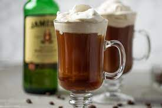

Irish Coffee

Description
Who said whiskey wasn't for breakfast?! This coffee delight is sure
to get your morning going!
Ingredients
- 1.5 fl oz Irish cream liquer
- 1.5 fl oz Irish whiskey
- 1 cup hot brewed coffee
- 1 tablespoon whipped cream
- 1 dash ground nutmeg
Steps
- In a coffee mug, combine Irish cream and whiskey. Fill mug with coffee.
Top with dab of whipped cream and a dash of nutmeg.